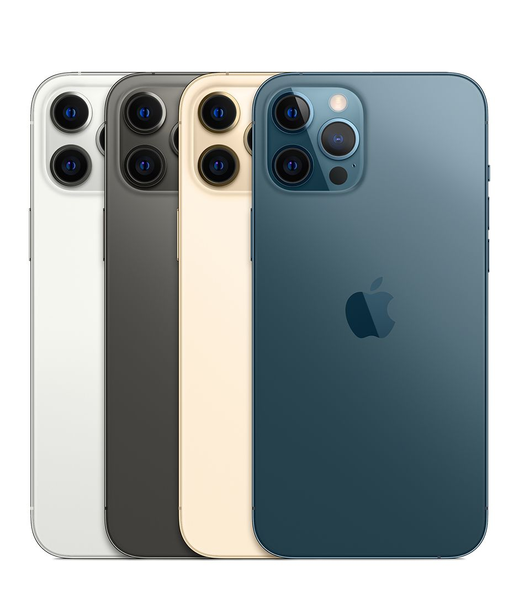

iPhone 12 Pro Max
El Apple iPhone 12 Pro Max es la variante con mayor tamaño de pantalla de la serie iPhone 12. Con una pantalla OLED de 6.7 pulgadas, el iPhone 12 Pro Max cuenta con un procesador Apple A14 Bionic con opciones de 128GB, 256GB, o 512GB de almacenamiento, cámara cuádruple con tres lentes de 12 megapixels más un lente TOF 3D de tecnología LiDAR, cámara selfie de 12 megapixels, estabilización de imagen, zoom óptico 5x, parlantes stereo, carga rápida e inalámbrica por MagSafe para iPhone o protocolo Qi, resistencia al polvo y agua con certificación iP68, y corre iOS 14.
